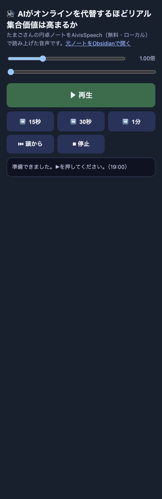
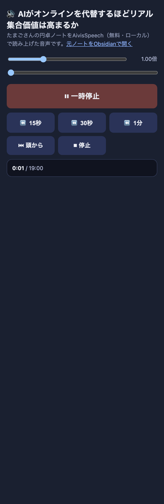

| 確認項目 | 結果 |
|---|---|
| 本番URLが200で開ける(音声・ページ両方) | OK |
| 読み上げ音源が実音声ファイル(AivisSpeech/dokudoku_worker.py)である(speechSynthesisではない) | OK |
| 読み始めがタイトル候補見出し以降のみ(それより上のメタ情報を含まない) | OK |
| headless Chromeで▶を実クリックし、audio.paused=falseかつcurrentTimeが2秒後に1.61秒まで実際に進んだ | OK |
| 15秒戻す/停止ボタンの実クリック動作 | OK |